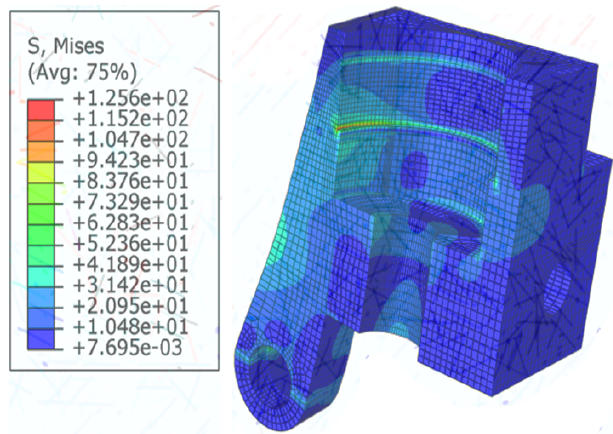
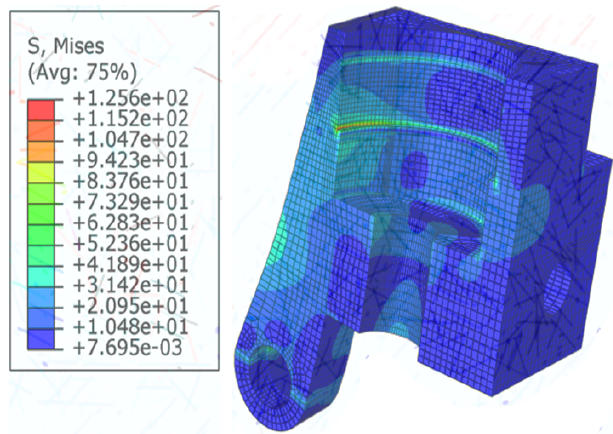

About Me
I am a Ph.D. candidate in Biomedical Engineering at NC State/UNC focusing on the design and control of wearable robotic systems such as prostheses and exoskeletons. My mission is to translate research into impactful products that improve human mobility and independence.
Projects
- Hybrid Hydraulic Ankle Prosthesis — Designed and fabricated a passive ankle prosthesis, now U.S. patented. [PDF]
- Robotic Knee Prosthesis with Fault-Tolerant Control — Developed a real-time controller to detect and mitigate internal errors during gait. [Video]

[PDF] - Hip Exoskeleton for Mediolateral Balance — Designed a hip exoskeleton with momentum-based control for narrow beam walking. [Poster]

 



[PDF]
Publications
- "Real-Time Adaptive Control of Robotic Knee Prosthesis" – under review at Science Robotics.
- "Exoskeleton-Based Stability Control During Challenging Locomotion" – presented at ICRA 2024.
Resume
Contact
Email: anaseri@ncsu.edu
LinkedIn: linkedin.com/in/ar-n
GitHub: github.com/Amir7RN